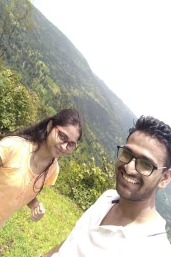
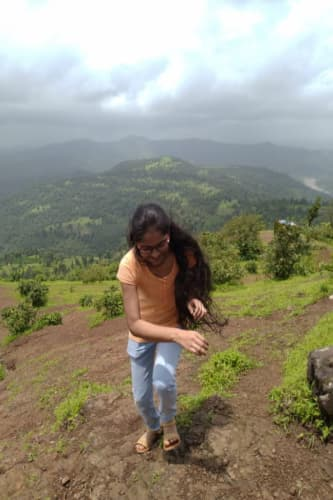

My Lovestory
Wilson Hill
2 September
Wilson hill
Vese to Wislon hill to khud me hi ek kahani hai..Actually muje to lagta hai ye yahi spot hai jab muje laga ki me Riya ko bohot pasand karne laga hu..to suru karte hai..din ki shuruat hui aur me to raat se hi bohot ready tha pata nahi me bohot khush tha aur time se pehle hi uth gaya aur uth ke mene parth ko uthaya aur use kaha ki Driver ko call karle..driver ko call kiya lekin usne nahi uthaya uske baad ham taiyar ho gaye...fir baar baar driver ko call karne lage actually pichli raat hi riya se kaha tha ham sharp 7 baje nikle the aur muje pata bhi tha agar ham 7 baje nahi nikle to fir Riya samjegi ki meri vajah se hi late hua aur me chahta tha ki koi excuse na du...lekin driver ne kaha ki gadi me problem hai aur vo abhi hi utha hai..me dar gaya ki ham ja paenge ya nahi par akhir me driver ne kaha ki vo late aaega aur ham 1 hour jitna late ho gaye pehle eco hamne apne ghar pe bulai aur uske baad ham Riya ke stop pe jake uska wait karne lage aur Riya 5 minute aai shayad...Riya ne thoda safron jesa top pahna hua tha aur jeans pehni hui thi aur niche chappal pehni hui thi...actually kya tha ki pichle din hi mene soch liya tha ki me auto ki tarah yaha bhi aage nahi bethne vala me piche bethunga aur try karunga ki Riya ki baju me bethne mile muje aur Riya mere baju me bethi eco me...Fir vaha se ham petrol pump gaye gadi me CNG bharwane aur vaha pe shayad mene Riya ki thodi majak bhi udai ki vo kyo chappal matlab sandal pehanke aayi..Usne kaha muje shoes achche nahi lagte...mere se jyada bola hi nahi ja raha tha...fir vaha se hamne char rasta pe sneha ko pick kiya aur ham aage badhe...ab rasta kafi lamba tha to hamne socha ki gaane lagate hai..pehle mene gaane lagaye par uske baad ye kam Riya ne apne majbut hatho me le liya...Riya ne punjabi gane lagana start kiya...aur sare mast mast punjabi gane...mene nahi socha tha us time pe Riya ko punjabi gane bohot pasand honge...me to bas gane ga hi ja raha tha...thodi si window hamne khuli rakhi thi aur aapko to pata hi hai ki Riya ke baal bohot lambe hai to khindki me halka halka pawan aa raha tha aur Riya ke baal halke halke mere chehre ko chu rahe the mera dil to dhak dhak kar raha tha...par me to gana enjoy kar raha tha...uske baad muje samaj aaya ki gaano ko me aur Riya hi jyada enjoy kar rahe hai to mene parth aur sneha se kaha ki ab hai na ek ek baar sab apne apne pasand ke gane lagaenge jisse sabko maja aae...to vesa kiya hamne..ha ek baat to batana bhul hi gaya raste me Riya ne ek bohot hi slow gana laga diya tha muje normally to sab gane achche lagte hai to mene us time pe kaha ha achcha hai gana aur gana chal raha tha par vo gana bohot lamba tha...to akhir me mene kaha bohot lamba hai gana...To riya ne kaha agar pasand nahi tha to pehle bol dete na aur Riya thodi ho gai gussa..ha par safar me maja aa gaya...rasta kharab tha to jyada time lag raha tha par dhire dhire chal rahi hawa...Riya ke baal...Punjabi songs inhone safar ko bohot achcha bana diya tha...

To akhir me ham pohoch gaye wilson hill
Yup...same feeling ...abhi jo aapko picture dekhke ho rahi hai..vesi hai meri feeling wilson hill ko dekhke ....actually me wilson hill me pehle gaya hua hu dosto ke sath...par abhi barish ka mosam tha aur abhi jesa wilson hill dikh raha hai vesa to kabhi nahi dikhta tha...Actually vaha pahunch ke mene Riya ke expression dekhe to Riya to bohot khush thi ..ham charo ne start kiya chalna...ham sab vahi pe gaye jaha log ja rahe the hame us vakt nahi pata tha ki ek aur rasta hai jo isse bhi achcha hai...lekin parth aur sneha ne chalna start kiya aur mene aur Riya ne....hahaha...ha to mene aur Riya ne to dodna start kar diya...aesi jagah ko dekhke to Riya bohot khush ho gai thi ab Riya ko yaha pe sab jagah jana tha...Parth aur sneha ka dhyan yaha pe thoda photo me tha...
Riya ka dhyan bas nature pe tha...par mera dhyan Riya pe tha...actually me ek baar photo khinchwane piche rah gaya aur Riya aage nikal gayi...mene kaha Riya ko kuch ho na jaye...me daudke Riya ke pas chala gaya...vaha pe aage ek mandir jesa tha to Riya vaha pe jake darshan karne lagi..Riya ne muje bhi kaha ki tum bhi jao aur Darshan karo...mene kaha ha...par mene kaha muje shoes nikalne padenge...fir mene shoes nikale aur hath niche karke khada reh gaya to Riya mere pas aai aur usne hath pakad ke muje bataya ki aese hath jodte hai....thodi der me vaha parth bhi aa gaya aur kaha mujse ki tum to believe nahi karte ho bhagwan me...ab me vaha kya kehta...muje achcha lag raha tha us time pe...Riya ne use bhi kaha par usne hath nahi jode...uske baad ham aage chale ek shant si place tha vaha pe ham charo bethe thodi der aur bohot masti bhi ki fir ham vapis jane ke liye aage badhe ab actually kya tha ye place tha na pura circular tha matlab left jao ya right tum pohonch jaoge jaha se aaye the to parth aur sneha vaha se right gaye mene socha me left chalta hu kyonki actually vaha pe thoda chadne jesa tha aur vo chadne me maja aata tha to me aur Riya vaha se left gaye ham to dodte dodte pahonch gaye ab ham to pohonch gaye par parth aur sneha kaha? unka to kuch pata hi nahi chal raha tha hamne wait bhi kafi kiya vaha pe....mene aur Riya ne baate bhi ki..Riya shailja ke bare me bata rahi thi...me sun raha tha uski baate...Riya keh rahi thi agar shailja ko pata chalega ki usne aur dost bana liye hai to shailja dantegi... mene kaha aesa kyo..dosti me thodi aesa hota hai ki tum meri dost ho to aur kisiki nahi ho sakti...par usne muje kaha best friend me yahi hota hai...agar tum mere best friend ho to me nahi sahana karungi agar tumhara aur koi best friend ban jaye...to aese hamne thodi der baate ki..Riya ko achcha lag raha tha mere sath par ab hame chinta ho rahi thi sneha aur parth ki...
actually kya tha mere phone ka network nahi aa raha tha vaha aur na hi Riya ke phone ka...to mene ek ladke se baat ki vaha pe ki vo apna phone de taki ham inko call karke puch sake usne apna phone diya...mene try kiya parth ko phone karne ka lekin vo phone nahi utha raha tha...fir mene aur Riya ne decide kiya ki ham dhundhte hai dono ko to ham dono devide hue aur ek side me gaya aur ek side Riya gayi...abhi me yaha dhundh raha tha parth aur sneha ko lekin mera dhyan tha sirf Riya pe baar baar me height pe chadke dekh raha tha Riya kahape hai...actually jab me pehli baar height pe chadke dekha to Riya bhi height pe chadi hui thi...ha lekin vo sneha aur parth ko dhundh rahi thi...me to fatafat circle ghum ke Riya ke pas aa gaya aur mene kaha yaha pe to dono nahi mile...aur fir ham bahar nikle vaha se...ha hamne driver se bhi puch liya tha ki yaha pe to nahi aaye the na dono...jese hi ham bahar aa rahe the vaha se to mene dekha sneha aur parth ko...unhone kaha ki pehle vo niche ghum ke aaye aur fir vo khane gaye the..ham dono ko khana hai ya nahi vo puch rahe the...mene kaha muje bhi niche jana hai ghumne aur mene kaha shayad jab ham ghumne aaye to vahi pe gaye honge....Parth ne Riya ke samne dekha...Riya ne kaha me bhi chalungi...tab actually me bohot khush ho gaya tha...ki yeeeeeee....Riya mere sath aaegi...actually us time pe time bohot kam tha hamare pas...I think 40 min jitna hi bacha tha 1 bajne me aur hamara plan tha ki ham 1 baje nikal lenge isliye ham dodte hue gaye niche...niche utarne me to ham bohot tez tez ja rahe the....lekin ham thode aage pahunche honge ki barish start ho gayi...vaha pe hamne ek platform jesa dekha jiske niche sab khade ho gaye the..to ham bhi vaha jake khade ho gaye aur jese hi thodi barish ruki to ham dono aage badhe aur niche utarte gaye....actuallly vaha us time barish hui thi to gila tha matlab fislan thi vaha pe ...to ham ek dusre ka hath pakad pakad ke utar rahe the...me pehle utar raha tha aur baad me Riya ko utar raha tha...to aese karke ham niche utarte hi ja rahe the....Ham niche utarte hi ja rahe the aur hame time ka bhi pata nahi chal raha tha ki kab kitna time ho gaya aur aapko to pata hi hoga ki hamne Riya ke ghar pe kaha tha ki ham 3 baje tak aa jayenge kyonki me already ek baar gaya hua tha wilson hill aur muje pata tha ki vaha ghumne me jyada time nahi lagta par ham pehle galat raste me chale gaye the aur jaha ghumna tha vaha gaye hi nahi the...Mene actually Riya ko kaha hua tha ki vaha ham niche utar sakte hai to jaha ham pehle gaye the na to us raste pe bas Riya rasta hi dhundh rahi thi ki kis raste se ham niche utarenge..
 